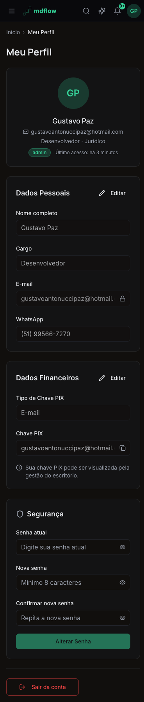
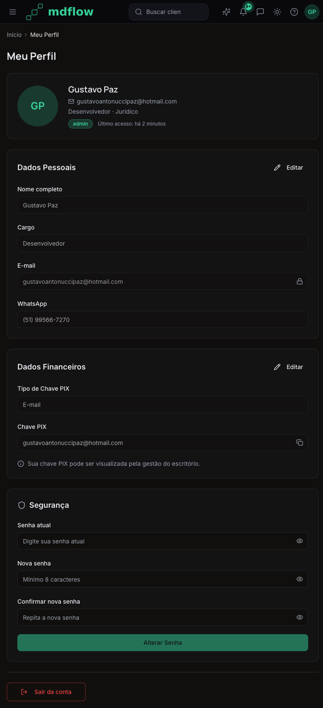
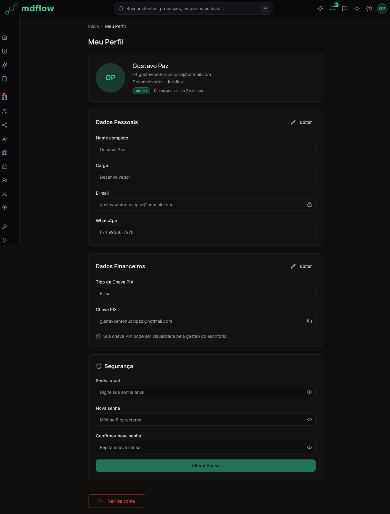
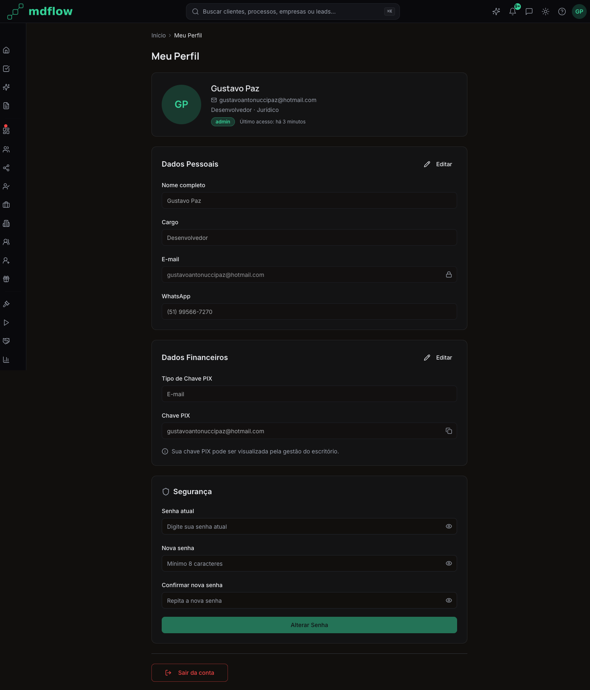
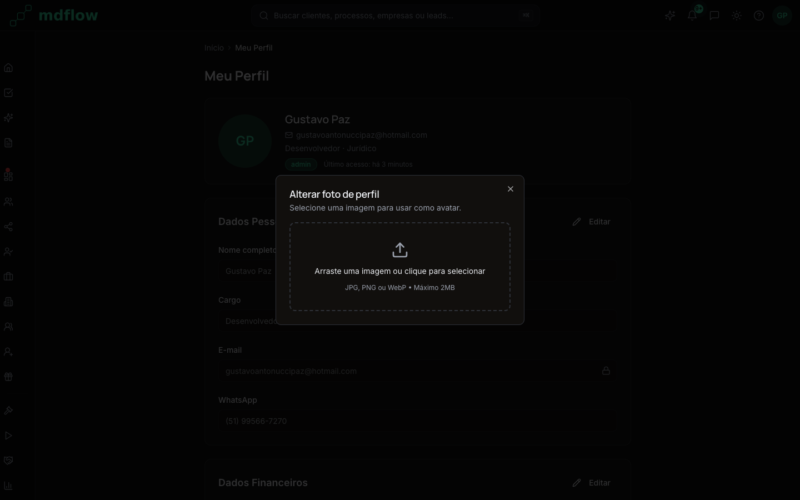

Auditoria visual completa | Pagina: Meu Perfil | Data: 2026-04-02 | Auditor: Beto (CC)
Problema: useBlocker de react-router-dom requer createBrowserRouter (data router), mas o app usa BrowserRouter. Resultado: crash imediato ao navegar para /usuario.
Erro: useBlocker must be used within a data router
| Arquivo | Linha | Codigo Original | Fix |
|---|---|---|---|
| src/pages/usuario/index.tsx | 2, 47-57 | import { useBlocker } from 'react-router-dom';const blocker = useBlocker(isDirty); |
Removido useBlocker. Protecao SPA mantida via beforeunload. Comentario explicativo adicionado. |
FIX APLICADO nesta sessao. Pagina agora renderiza corretamente.
Com a remocao do useBlocker, a protecao de dirty state na navegacao SPA (clicar sidebar, links) foi perdida. Apenas beforeunload (refresh/fechar aba) protege.
Fix sugerido: Implementar hook customizado useNavigationBlocker usando window.addEventListener('popstate') ou migrar para createBrowserRouter no App.tsx.
| Arquivo | Acao |
|---|---|
| src/pages/usuario/index.tsx | Adicionar hook de bloqueio SPA customizado |
O PageGuard bloqueia acesso a /usuario para usuarios nao-admin porque a rota nao esta em user.permissoes. Funciona apenas porque o usuario de teste e admin (isAdmin bypassa). Usuarios com perfil juridico/comercial nao conseguem acessar seu proprio perfil via URL direta.
Fix sugerido: Remover o PageGuard de /usuario no App.tsx, pois todo usuario autenticado deve poder acessar seu proprio perfil. Ou adicionar /usuario como permissao default para todos os perfis.
| Arquivo | Linha | Acao |
|---|---|---|
| src/App.tsx | 258-259 | Remover <PageGuard rota="/usuario" /> wrapper |
O botao de copiar PIX tem title mas falta aria-label. Botoes "Editar" e "Cancelar" nos forms sao texto-somente (OK), mas o botao Descartar no dirty banner usa icone X sem label explicito.
| Arquivo | Linha | Fix |
|---|---|---|
| src/pages/usuario/components/UsuarioFinancialForm.tsx | 245 | Adicionar aria-label="Copiar chave PIX" |
| src/pages/usuario/components/UsuarioDirtyBanner.tsx | ~38 | Botao Descartar ja tem texto, mas verificar que X icon nao confunde leitores de tela |
style={{ width: 256, height: 256 }} no canvas container. Valor fixo em pixels, nao usa token Tailwind.
| Arquivo | Linha | Fix |
|---|---|---|
| src/pages/usuario/components/ModalAvatarCrop.tsx | 278 | Substituir por className="w-64 h-64" (256px = 16rem = w-64) |
style={{ width: `${strength.pct}%` }} e aceitavel para valor dinamico. Sem violacao real, mas documentar como excecao.
| Arquivo | Linha |
|---|---|
| src/pages/usuario/components/UsuarioPasswordForm.tsx | 124 |
Veredicto: Aceitavel (valor dinamico computado).
Os H3 dos cards usam text-lg font-semibold sem font-display (Manrope). Apenas o H1 "Meu Perfil" e H2 do identity card usam Manrope. Sugestao: adicionar font-display aos H3 dos cards para consistencia.
| Arquivo | Linhas |
|---|---|
| UsuarioPersonalForm.tsx | 120 |
| UsuarioFinancialForm.tsx | 177 |
| UsuarioPasswordForm.tsx | 97 |
O botao eye toggle (mostrar/ocultar senha) e o botao copy PIX nao tem focus-visible:ring. Apenas o avatar button tem. Padronizar para todos icon-only buttons.
| Arquivo | Linhas |
|---|---|
| UsuarioPasswordForm.tsx | 38 (botao eye) |
| UsuarioFinancialForm.tsx | 243 (botao copy) |





font-display text-2xl font-bold text-foreground. Manrope aplicada. Correto.mx-auto w-full max-w-3xl space-y-6. Correto.space-y-6 entre cards, space-y-5 interno. Consistente.space-y-6 interno (usa gap-4/gap-6 via flex). Consistente com seu layout horizontal, nao e violacao.font-display (Manrope) correto.text-sm font-medium text-foreground em todos os forms. Correto.truncate no identity card, comportamento intencional.text-lg font-semibold sem font-display. O DS sugere Manrope para titulos. P2-003 registrado.grep -rn 'bg-\[#\|text-\[#\|border-\[#' retornou vazio. Nenhuma violacao.bg-card/60 backdrop-blur-lg. Correto.text-foreground, text-muted-foreground, text-destructive usados corretamente.bg-primary/20 text-primary. Avatar fallback usa bg-primary/20 text-primary. Correto.border-border em todos os inputs e cards. Correto.bg-destructive, bg-warning, bg-success. Correto.glass (default) com backdrop-filter: blur. Usado em cards (correto). Nao usado em tabelas/inputs/botoes (correto).cursor-default opacity-70. Email usa cursor-not-allowed opacity-60 + icone Lock. Distintos visualmente. Correto.transition-opacity group-hover:opacity-100. Correto.initial/animate/exit. Respeita prefers-reduced-motion. Excelente.truncate. Na area de inputs, email longo corta com ellipsis dentro do input. Comportamento aceitavel, nao e violacao.DialogContent do shadcn (herda dark theme). Correto.border-2 border-dashed border-border com hover border-primary/50 hover:bg-muted/30. Visual claro.DialogDescription presente (acessibilidade).flex gap-2 com flex-1 cada. Alinhados. Voltar=outline, Salvar=default. Correto.onTouchStart/Move/End implementados para mobile crop. Bom.Wallet com opacity-40, texto text-muted-foreground, botao variant="outline". Centrado com flex-col items-center gap-3 py-10. Correto e bem visual.AlertCircle, texto descritivo, botao "Tentar novamente" com RefreshCw. Correto.aria-label="Alterar avatar". Correto.aria-label={visible ? 'Ocultar senha' : 'Mostrar senha'}. Correto.disabled nativo (opacity reduzida automatica). Correto.title mas falta aria-label. P1-003.<nav> semantico. OK.| Verificacao | Resultado | Detalhes |
|---|---|---|
Cores hardcoded (bg-[#, text-[#, border-[#) | PASS | Zero ocorrencias |
Z-index fora do scale (z-[) | PASS | Zero ocorrencias |
Shadow hardcoded (shadow-[) | PASS | Zero ocorrencias |
| Inline styles | 2 ocorrencias | ModalAvatarCrop:278 (width/height), PasswordForm:124 (width%). Ver P2-001. |
| Lucide icons exclusivo | PASS | Todos icons sao lucide-react |
| aria-labels em icon buttons | Parcial | Avatar e eye OK. Copy PIX falta. Ver P1-003. |
| font-display (Manrope) | PASS (H1) | H1 usa font-display. H3 nao (opcional). Ver P2-003. |
| staleTime em hooks | PASS | useUserProfile usa staleTime: 30_000 |
| organizacao_id em queries | PASS | Query filtra por user ID (single user). RLS forca org. |
| Arquivo | Linhas | Status |
|---|---|---|
| src/pages/usuario/index.tsx | ~100 | P0 corrigido |
| src/pages/usuario/components/UsuarioIdentityCard.tsx | ~150 | OK |
| src/pages/usuario/components/UsuarioPersonalForm.tsx | ~222 | OK |
| src/pages/usuario/components/UsuarioFinancialForm.tsx | ~295 | P1 aria |
| src/pages/usuario/components/UsuarioPasswordForm.tsx | ~160 | P2 focus |
| src/pages/usuario/components/UsuarioDirtyBanner.tsx | ~42 | OK |
| src/pages/usuario/components/UsuarioBreadcrumb.tsx | ~18 | OK |
| src/pages/usuario/components/UsuarioLogout.tsx | ~40 | OK |
| src/pages/usuario/components/ModalAvatarCrop.tsx | ~360 | P2 style |
Gerado por Beto (Claude Code) | 2026-04-02 | MdFlow Front Audit v1 | Pagina: /usuario